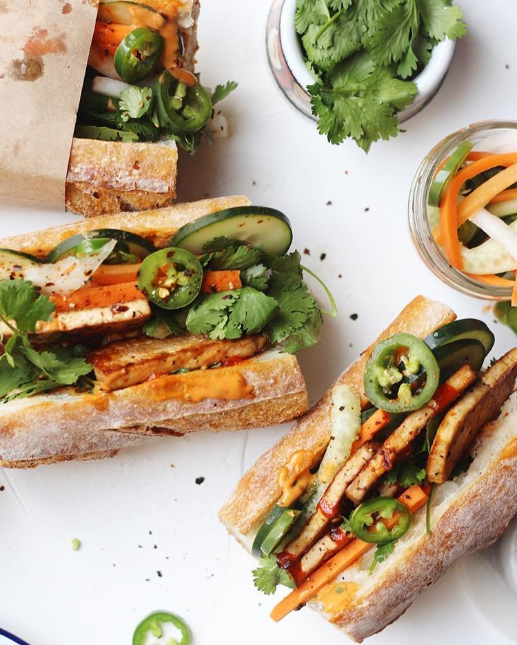

- 150g leftover raw veggies , (such as red cabbage and carrots), shredded
- 3 tbsp good-quality vegan white wine vinegar
- 1 tsp golden caster sugar
- 1 long French baguette
- 100g hummus
- 175g cooked tempeh , very finely sliced
- ½ small pack coriander , leaves picked, to serve
- ½ small pack mint , leaves picked, to serve
- hot sauce , to serve (we used sriracha)
- Put the shredded veg in a bowl and add the vinegar, sugar and 1 tsp salt. Toss everything together, then set aside to pickle quickly while you prepare the rest of the sandwich.
- Heat oven to 180C/160C fan/gas 4.
- Cut the baguette into four, then slice each piece horizontally in half.
- Put the baguette pieces in the oven for 5 mins until lightly toasted and warm.
- Spread each piece with a layer of hummus, then top four pieces with the tempeh slices and pile the pickled veg on top.
- To serve, sprinkle over the herbs and squeeze over some hot sauce, then top with the other baguette pieces to make sandwiches.